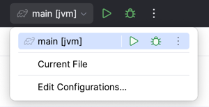

Usage
Using Amper from the command line¶
Installation¶
To use the Amper CLI, you need to download the Amper executable script to your project's root folder. The script is a small file that downloads and runs the actual Amper CLI distribution, and serves as an entry point for all Amper commands. It is meant to be checked into your VCS, so your team can build and run your project without any installation, no matter their OS.
Use one of the following commands to download the script:
Linux/macOS:
curl -fsSL -o amper https://jb.gg/amper-latest-wrapper.sh && chmod +x amper && ./amper update -c
Windows PowerShell:
Invoke-WebRequest -OutFile amper.bat -Uri https://jb.gg/amper-latest-wrapper.bat; ./amper update -c
Note
The ./amper update -c command will automatically get the wrapper script for the other OS.
You can check both into your VCS so your team can build and run your project without any installation, on any OS.
Note
The first time you run the Amper script, it will take some time to download the Amper CLI distribution. Subsequent runs will be faster, as the downloaded files will be cached locally.
Exploring Amper commands¶
The root ./amper command and all subcommands support the -h (or --help) option to explore what is possible:
./amper --help # shows the available commands and general options
./amper build --help # shows the options for the 'build' command specifically
Useful commands:
amper initto create a new Amper projectamper buildto compile and link all code in the projectamper testto run tests in the projectamper runto run your applicationamper cleanto remove the project's build output and caches
For example, to build and run the JVM "Hello, World":
cd jvm
./amper run
Amper CLI tab-completion¶
If you’re using bash, zsh, or fish, you can generate a completion script to source as part of your shell’s
configuration, to get tab completion for Amper commands.
First, generate the completion script using the generate-completion command, specifying the shell you use:
./amper generate-completion zsh > ~/amper-completion.sh
Then load the script in your shell (this can be added to .bashrc, .zshrc, or similar configuration files to load it
automatically):
source ~/amper-completion.sh
You should now have tab completion available for Amper subcommands, options, and option values.
Updating Amper to a newer version¶
Run ./amper update to update the Amper scripts and distribution to the latest released version.
Use the --dev option if you want to try the bleeding edge dev build of Amper (no guarantees are made on these builds).
See ./amper update -h for more information about the available options.
[!NOTE]
If you had generated a completion script before, you need to re-generate it with the new Amper version (see previous section).
Using Amper in IntelliJ IDEA¶
The latest IntelliJ IDEA EAP can be used to work with JVM and Android projects.
See the setup instructions to configure your IDE and the environment.
Open an Amper project as usual by pointing at the root folder.
To run an application:
-
use the 'run' (
 ) gutter icon next to the
) gutter icon next to the product:section in amodule.yamlfile:\
-
use the 'run' (
) gutter icon next to the main()function:\
-
use Run/Debug configurations:\ \

To run tests, use the 'run' ( ) gutter icon next to the test functions or classes.
Read more on testing in IntelliJ IDEA.
) gutter icon next to the test functions or classes.
Read more on testing in IntelliJ IDEA.